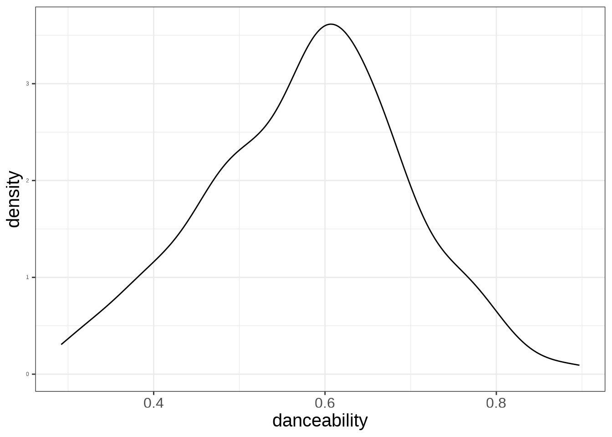
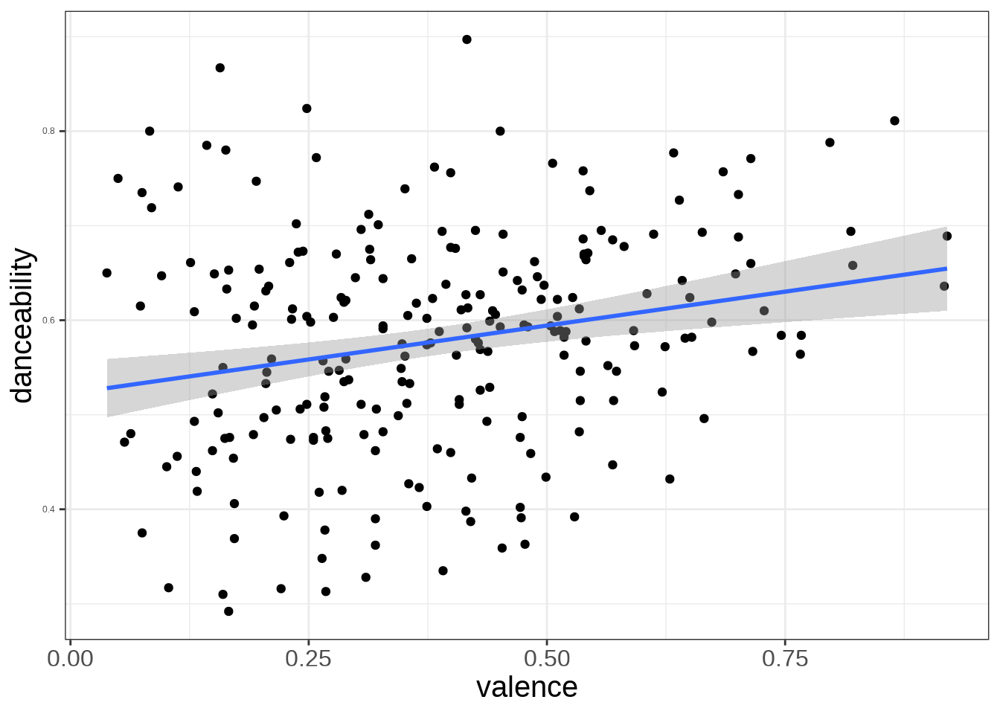
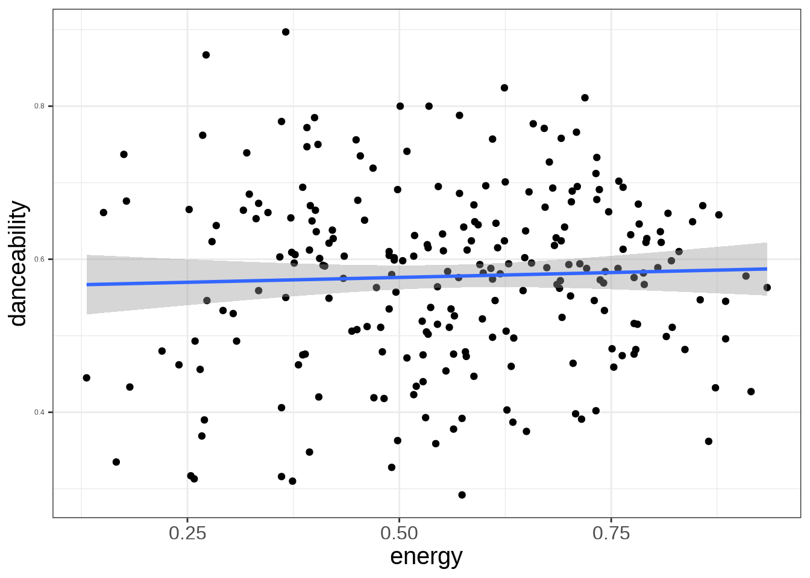

Code
ggplot(taylor_album_songs, aes(danceability)) +
geom_density()#> Warning: Removed 3 rows containing non-finite outside the scale range (`stat_density()`).
This is the process where we try to reduce the variation with the use of other variables.
Can be thought of as getting it less wrong when taking an educated guess.
mode_name#> Warning: Removed 3 rows containing non-finite outside the scale range (`stat_smooth()`).#> Warning: Removed 3 rows containing missing values or values outside the scale range (`geom_point()`).
#> Warning: Removed 3 rows containing non-finite outside the scale range (`stat_smooth()`).#> Warning: Removed 3 rows containing missing values or values outside the scale range (`geom_point()`).
How do we use all the variables to explain danceability?
Multivariable Linear Regression (MLR) is used to model an outcome variable (\(Y\)) by multiple predictor variables (\(X_1, X_2, \ldots, X_p\)).
Using MLR, you propose that the ouctome variable was constructed from a set of predictors, with their corresponding regression coefficients (\(\beta\)), and a bit of error
\[ Y = \beta_0 + \beta_1 X_1 + \beta_2 X_2 + \cdots + \beta_p X_p + \varepsilon \]
\[ \varepsilon \sim DGP \]
\[ Y = \beta_0 + \beta_1 X_1 + \beta_2 X_2 + \cdots + \beta_p X_p + \varepsilon \]
\[ \varepsilon \sim DGP \]
\[ Y_i = \beta_0 + \beta_1 X_{i1} + \beta_2 X_{i2} + \cdots + \beta_p X_{ip} + \varepsilon_i \]
\[ \varepsilon_i \sim DGP \]
\[ Y_i = \beta_0 + \beta_1 X_{i1} + \beta_2 X_{i2} + \cdots + \beta_p X_{ip} + \varepsilon_i \]
\[ \beta_0, \beta_1, \beta_2, \beta_3, \ldots, \beta_p \]
\[ Y_i = \beta_0 + \beta_1 X_{i1} + \beta_2 X_{i2} + \cdots + \beta_p X_{ip} + \varepsilon_i \]
\[ \hat Y_i = \hat\beta_0 + \hat\beta_1 X_{i1} + \hat\beta_2 X_{i2} + \cdots + \hat\beta_p X_{ip} \]
\(\beta_0, \beta_1, \beta_2, \beta_3, \ldots, \beta_p\) are estimated by minimizing the following function:
\[ \sum^n_{i=1} (Y_i-\hat Y_i)^2 \]
\[ dance = 0.54 + 0.07\times Minor + 0.18 \times valence - 0.06 \times energy \]
Each regression coefficient \(\beta_i\) represents how the predictor variable changes the outcome, as it increase by 1 unit.
For categorical dummy variables, the \(\beta_i\) represents how the outcome will change when the data point belongs to that value.
For \(hat \beta_i\), which is the regression coefficient (slope) of \(X_i\):
As \(X_i\) increases by 1 unit, the outcome (\(Y\)) will increase/decrease by \(\hat \beta_i\) units, adjusting for all other predictor variables.
For categorical dummy variables \(X_i\):
The outcome \(Y_i\) increases/decreases by \(\beta_i\) units for category \(X_i\) compared to the reference category, adjusting for all other predictor variables.
\[ dance = 0.54 + 0.07 Minor + 0.18 valence - 0.06 energy \] Minor song’s average danceability score is 0.07 units higher compared to Major song’s, adjusting for valence and energy.
\[ dance = 0.54 + 0.07Minor + 0.18 valence - 0.06 energy \]
As valence increases by 1 unit, danceability increases by an average of 0.18 units, adjusting for energy and type of song.
\[ dance = 0.54 + 0.07 Minor + 0.18 valence - 0.06 energy \]
As energy increases by 1 unit, danceability decreases by an average of 0.06 units, adjusting for valence and type of song.
Computing \(R^2\) is done by determining how much the variation in the outcome is explained by model and divided by the variation of the outcome.
\[ R^2 = \frac{\text{variation explained by model}}{\text{variation from outcome}} \\ = 1-\frac{\text{variation of residuals}}{\text{variation from outcome}} \]
Problems arise when multiple predictors are added to the model. As a new predictor is added to the model, new information is added to the model which will always reduce the variation in the residuals. Therefore, the \(R^2\) will always increase.
When the number of variables increase, the regular \(R²\) will be biased in its prediction capability when new data is obtained.
Therefore, statisticians uses the adjusted \(R^2\), that penalizes the model when more variables are added. This ensures that a variable added will have a significant effect in predicting outcomes.
\[ R_a^2 = 1-\frac{\text{variation of residuals}}{\text{variation from outcome}}\times \frac{n-1}{n-k-1} \]
#> [1] 0.081069078.1% of the variation in danceability is explained by the model.
Model Selection is the process of obtaining a “final” model containing all the necessary predictors, and eliminating any that are not necessary.
Begin with the null model (\(Y\sim 1\)) and add variables until a final model is chosen.
Begin with the full model, and remove variable until the final model is chosen.
A hybrid approach between the forward and backward building approach.
Generally, it is not a good idea to conduct model selection. The predictor variables in your model should be guided by a literature review that illustrates important predictor variables in a model.